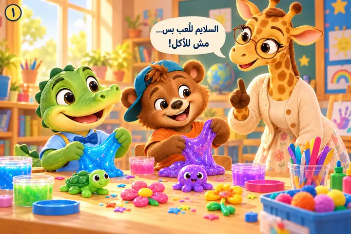
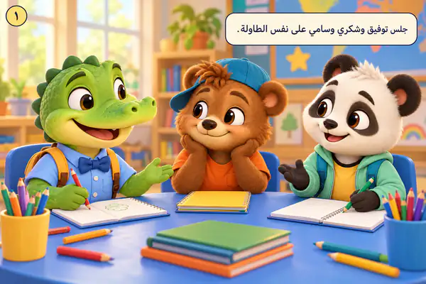
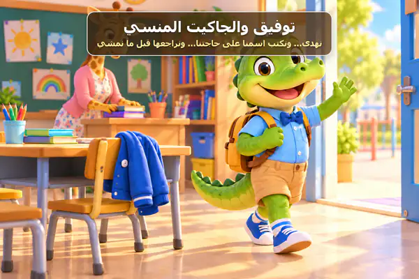
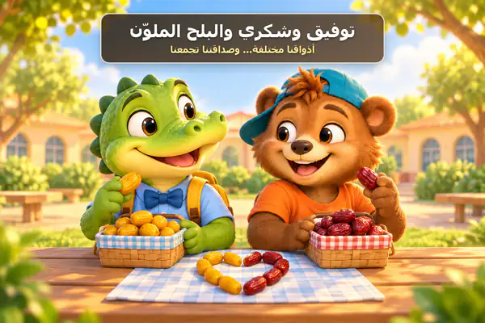
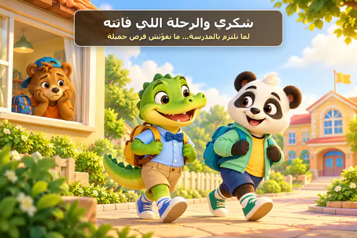
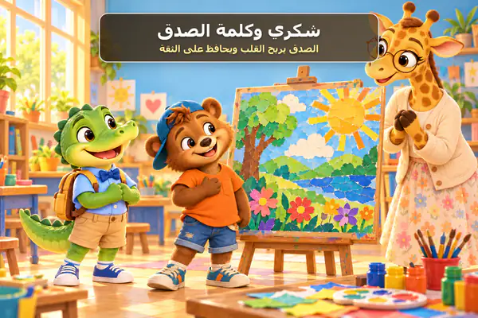
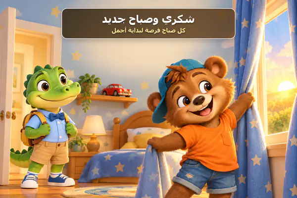
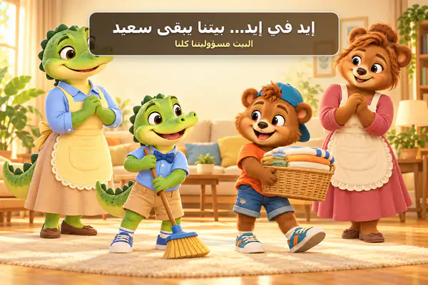

قصص مصوّرة للأطفال
مكتبة توفيق وشكري
اختار الغلاف، وافتح القصة، واقلب الصفحات بسهولة على الموبايل أو الكمبيوتر.
١
توفيق وشكري وميعاد الباص
عن الاستعداد المبكر والالتزام بالمواعيد وسلامة ركوب الباص.
افتح القصة ←
٢
شكري والسلايم
السلايم للعب وصنع الأشكال… وليس للأكل.
افتح القصة ←
٣
قلم سامي وحدود الآخرين
عن الاستئذان، وعدم التدخل، وحل الخلافات من غير عنف.
افتح القصة ←
٤
توفيق والجاكيت المنسي
عن الهدوء عند نسيان الأشياء، وكتابة الاسم عليها، ومراجعة الحقيبة قبل المغادرة.
افتح القصة ←
٥
توفيق وشكري والبلح الملوّن
لكل واحد ذوقه الخاص… والاختلاف لا يمنع الصداقة.
افتح القصة ←
٦
شكري والرحلة اللي فاتته
لما نلتزم بالمدرسة… ما نفوّتش فرص جميلة.
افتح القصة ←
٧
شكري وكلمة الصدق
الصدق يريح القلب ويحافظ على الثقة.
افتح القصة ←
٨
شكري وصباح جديد
من حقنا نزعل، لكن ما نخليش زعلنا يضايق الآخرين.
افتح القصة ←
٩
إيد في إيد… بيتنا يبقى سعيد
نرتّب حاجتنا ونساعد ماما وبابا، لأن البيت مسؤوليتنا كلنا.
افتح القصة ←